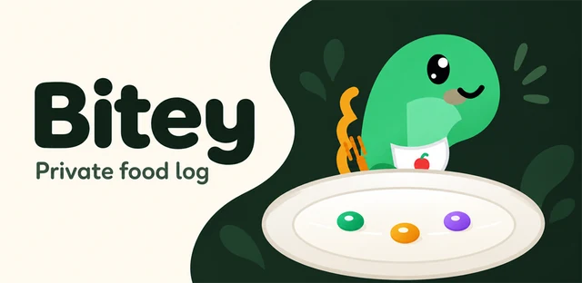
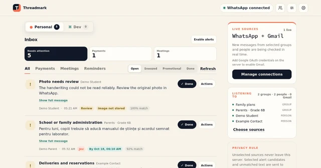

Ferramentas criativas
Kerfspan
Transforme uma fotografia em padrões conectados para recortar em metal.
As páginas dos projetos estão disponíveis nos 12 idiomas. Os avisos de privacidade continuam em inglês, nos endereços atuais.
Boas-vindas. Eu crio aplicativos, jogos e pequenas ferramentas.
Alguns úteis. Outros divertidos. Todos aqui para você explorar.
Três portas para a oficina.

E se uma fotografia pudesse virar uma peça de metal recortado? Padrões, retratos e arte que se mantém inteira.
Veja o que ganha forma ↗
Faça uma pergunta bancária em palavras simples e receba um rascunho SQL, com cada tabela, suposição e verificação à vista para revisão.
Veja como funciona ↗
Uma foto, uma porção e um pouco mais de compreensão do que você come. Com um dinossauro amigável ao seu lado.
Conheça o Bitey ↗Uma ferramenta útil. Uma ideia diferente. Um caminho que vale explorar.
A curiosidade não segue uma ordem certa.
Transforme uma fotografia em padrões conectados para recortar em metal.

Um pequeno planeta no seu bolso. Gire a Terra, explore o espaço e colecione descobertas.

Fotografe a refeição, ajuste a porção e mantenha um diário alimentar com a ajuda do Bitey.

Mantenha em ordem o caixa de uma turma: quem pagou, o que falta e para onde foi o dinheiro.

Transforme grupos lotados do WhatsApp e o Gmail em uma lista curta do que precisa de você: pagamentos, reuniões e prazos.

Uma foto vira um relevo 3D, dividido em camadas para criar um retrato metálico.

Mude a gravidade e cultive um jardim em um tranquilo jogo de quebra-cabeças baseado em física.

Um lugar para pensamentos soltos, fotos e notas de voz antes que desapareçam.

Desenhe como as coisas fluem. Crie e exporte diagramas no navegador.

Encontre um pouco de movimento para hoje com os equipamentos que você já tem.

Atravesse poços gravitacionais em um jogo de arcade retrô baseado em física.

Entenda o que mudou nas empresas que você acompanha. Reveja seus motivos.

Planeje as grandes despesas da família, da primeira estimativa à última parcela.

Teste sua intuição sobre a gravidade com quebra-cabeças de física orbital.

Acompanhe os trens da Romênia, suas rotas e as mudanças nos atrasos.

Veja a temperatura de casa com o histórico dos sensores e gráficos.

Uma nova ideia de defesa de torres: use física orbital e raios de resgate para salvar vidas.

Acompanhe anúncios, compare mudanças de preço e encontre uma boa oferta.

Registre a pressão arterial, acompanhe tendências e exporte seu histórico. Um aplicativo para Android e web.

Explore o histórico de admissões e simule escolhas de escolas de ensino médio em Bucareste.

Faça uma pergunta bancária e receba um rascunho SQL editável, fundamentado em um warehouse sintético com 5.000 colunas.

Uma pequena peça que ajuda aplicativos web a funcionar offline e ficar atualizados.

Um pequeno console para gerenciar convites e dispositivos em aplicativos web privados.

Capturas reais para a Play Store, de apps Android reais, feitas sempre do mesmo jeito.

OCR experimental que lê uma foto do medidor de pressão no navegador. Confira cada valor no aparelho.
Nenhum projeto por aqui ainda. Tente outra palavra ou explore toda a coleção.
Sou o criador da Zandaulion. Esta é minha pequena oficina na web: uma coleção de aplicativos, jogos e ferramentas que vai da rotina diária à arte e à física orbital.
Passeie, experimente algo ou dê uma olhada no código. Se alguma coisa despertar sua imaginação, vou adorar saber.